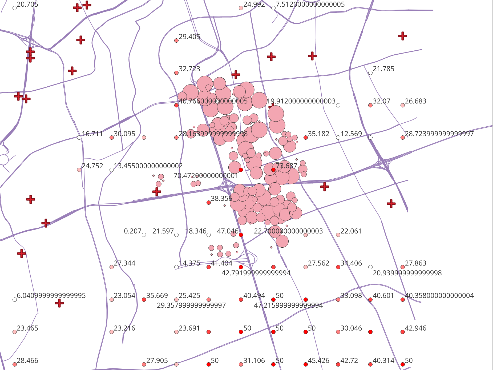
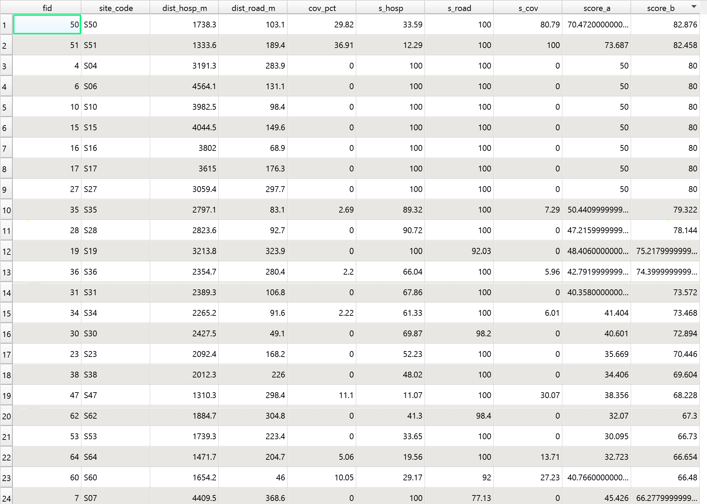

Lab 07 · November 2026
Mapping Health
The question
How can we choose a new hospital's position from canadate positions?
The data
I used the provided file, which gave the locations of 69 canadate sites for the new hospital, as well as location and sizes of houses and hospitals and the local road structure of an 10km square near NYU Shanghai campus.
The method
We first checked if any of the canadates have no homes within 1km of the location, and found 3/4 of the canadates do not serve any homes within a kilometer. We then tried three different weighting schemes of three scores for each canadate. Each score had a value between 0 and 100. The first score, s_hosp, scored the distance from the nearest hospital and capped at 100 points at 3km. The second, s_road, scored distance to the nearest main road, preferring not to be on top on top of the road, with maximum score achieved between 50 and 300m from a main road. The last score, s_cov, scored how many homes are within 1km of the canadate, on a scale that puts the best coverage canadate at 100 points. The weights shifted from preferring coverage to preferring road access to using raw coverage data in the last weight as a trial.


What I found
It seems sites 50 and 51 are the best, with which is best in the end coming down to whether coverage or access are prioritized.
What this does not show
This does not show the weights for any given map, and it does not explain how those weights are chosen. It also doesn't explain how canadates were generated, chosen, or filtered.
AI use: No AI tools were used for this entry, but Google Docs and https://tabletomarkdown.com was used for the tables above.
Reflection
I would defend the coverage-first weights as the priority for ambulances is being able to get the patient to the hospital as quickly as possible and, while roads can be rebuilt depending on the location, distance cannot be changed.
The 1,100m rule decided the answer before the weights were chosen because it modified the candidate list. In higher populated areas, this may underserve the community as they may require more hospitals to serve all of the people within the 1,100m radius. Perhaps it would be better to have the rule’s minimum distance be a function of population density.